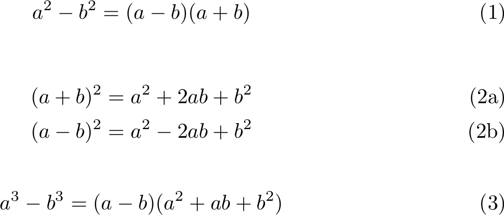
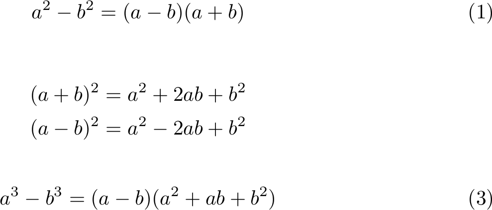

LaTeX: a bug with subequations
While working on my latest paper, I've come accross what looks like a bug with the subequations environment from the amsmath package. Here is a simple code snippet that demonstrates this bug
\documentclass{article} \usepackage{amsmath} \begin{document} \begin{equation} a^2-b^2 = (a-b)(a+b) \end{equation} \begin{subequations} \begin{align} (a + b)^2 &= a^2 + 2ab + b^2\\ (a - b)^2 &= a^2 - 2ab + b^2 \end{align} \end{subequations} \begin{equation} a^3 - b^3 = (a - b)(a^2 + ab + b^2) \end{equation} \end{document}
As it should, the code above results in the following document

Now, assume that Eqs. (2a) and (2b) are never referred to; then the equation numbers might be removed. A natural way to do so would be starring the align environment
\documentclass{article} \usepackage{amsmath} \begin{document} \begin{equation} a^2-b^2 = (a-b)(a+b) \end{equation} \begin{subequations} \begin{align*} (a + b)^2 &= a^2 + 2ab + b^2\\ (a - b)^2 &= a^2 - 2ab + b^2 \end{align*} \end{subequations} \begin{equation} a^3 - b^3 = (a - b)(a^2 + ab + b^2) \end{equation} \end{document}
Here is the result

The two equations in the subequations environment are no longer numbered. However, the equation number is wrongly incremented! Therefore, not only should the align environment be starred, but the subequations should also be commented out.